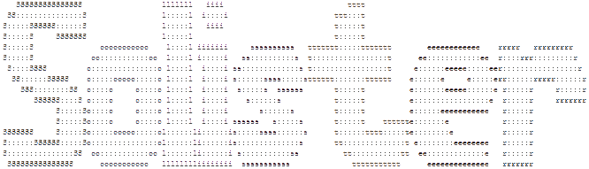

Olá, eu sou Solister e esse é meu site, Solister.top. Aqui você pode
encontrar
downloads para jogos Freeware além de alguns projetos para jogos que
eu fiz.
Talvez você me encontre em algum outro site por aí com este mesmo
nome,
se encontrar mande um "oi". Bem, é isso espero que aproveite.